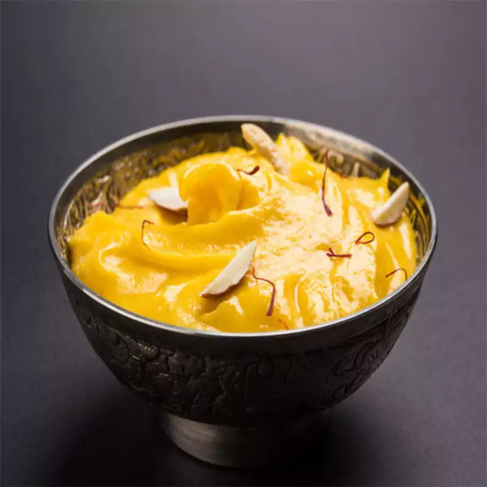

Gulab Jamun
Ingredients
- Mawa (Khoya) – 1 cup (grated)
- Maida (All-purpose flour) – 2 tbsp
- Milk powder – 2 tbsp (optional)
- Baking soda – 1/4 tsp
- Milk – As required (for kneading)
- Ghee/Oil – For deep frying
Process
- Make Sugar Syrup: Boil 1.5 cups sugar with 1 cup water, add cardamom, saffron (optional), rose water (optional), and lemon juice. Simmer until slightly sticky.
- Prepare Dough: Mash 1 cup khoya, mix with 2 tbsp maida, 2 tbsp milk powder (optional), and 1/4 tsp baking soda
- Knead & Rest: Add milk gradually, knead into a soft dough, and let it rest for 10-15 minutes.
- Shape Balls: Make small, smooth balls without cracks.
- Fry: Heat ghee/oil on low-medium flame and fry till golden brown.
- Soak in Syrup: Add hot Gulab Jamuns to warm sugar syrup and let them soak for 2-3 hours.
- Serve: Garnish with pistachios/almonds and enjoy warm or chilled! 😍

Shrikhand
Ingredients
- Hung curd (Chakka dahi) – 2 cups (strained yogurt)
- Powdered sugar – 1/2 cup (adjust to taste)
- Cardamom powder – 1/2 tsp
- Saffron strands – Few strands (soaked in 2 tbsp warm milk)
Process
- Prepare Hung Curd: Strain 2 cups yogurt in a muslin cloth for 4-6 hours to remove excess water.
- Soak Saffron: Mix saffron strands in 2 tbsp warm milk and set aside.
- Whisk Curd: Transfer hung curd to a bowl and whisk until smooth and creamy
- Add Sugar & Flavor: Mix in 1/2 cup powdered sugar, cardamom powder, and saffron milk. Whisk well.
- Chill: Refrigerate for 1-2 hours for better flavor.
- Garnish & Serve: Top with chopped nuts, dry fruits, and optionally add rose water.

Milk Cake
Ingredients
- Full-fat milk – 1 liter
- Lemon juice/Vinegar – 1 tbsp (for curdling milk)
- Sugar – 1/2 cup (adjust to taste)
- Ghee – 2 tbsp
Process
- Boil Milk: Heat 1 liter full-fat milk in a heavy-bottom pan and bring it to a boil.
- Curdle Milk: Add 1 tbsp lemon juice/vinegar and stir until milk curdles.
- Drain Water: Let it rest for 5 minutes, then strain the chhena (curdled milk) using a muslin cloth. Do not wash it.
- Cook the Mixture: Transfer back to the pan, add 1/2 cup sugar and 2 tbsp ghee. Stir continuously on low flame.
- Achieve Grainy Texture: Cook until it thickens, turns slightly brown, and leaves the sides of the pan.
- Set & Rest: Transfer to a greased plate or mold, press gently, and let it cool for 5-6 hours for proper texture.
- Garnish & Serve: Cut into pieces, garnish with chopped nuts, and enjoy! 😍